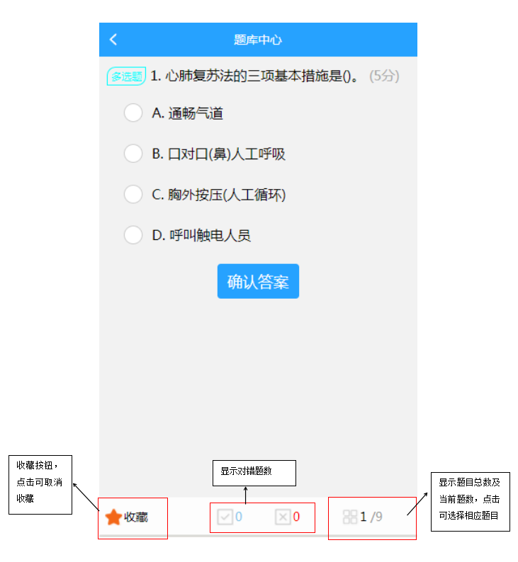

引言
系统概述
功能模块
我能做什么
进入界面
培训管理
培训需求
培训计划
培训报名
培训评估
我的需求
我的培训
培训记录
消息通知
考试管理
考试计划
考试记录
考试通知
自主学习
考前练习
试卷管理（仅被授权的人员可见）
培评资源
学习资源
教师资源
场地资源
题库中心
题目练习
我的错题
我的收藏
职业规划
新员工职业能力发展规划
评估/跟踪进度（仅被授权的人员可见）
个人中心
班组岗位
我的考试
我的培训
自主学习
待我审批
职业规划
场地申请
培训报名
考试报名
我的通知
我的足迹
扫一扫
活动中心（暂未开放）
资讯消息
最新培训
推荐视频
培训需求
Published with GitBook
我的收藏
1.点击图5或图6的我的收藏即可进入我的收藏题目页面，每次进入题目顺序都是随机的，具体界面如下图所示。

results matching "
"
No results matching "
"